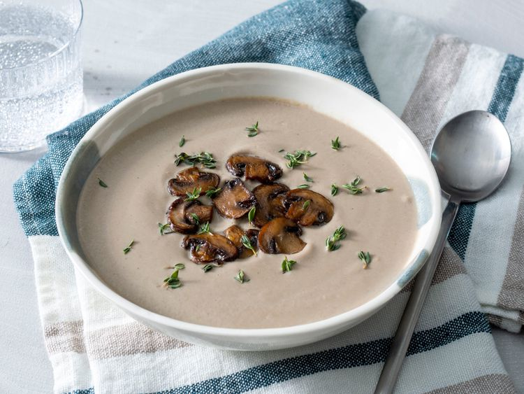

Home
Cream of Mushroom

PHOTO: DOTDASH MEREDITCH FOOD STUDIOS
This mushroom soup is creamy and rich — it's one of my favorite soups of all time and it's so easy! The long, slow caramelization of the mushrooms requires a little patience, but it really unlocks their magical flavor, which is the secret to this mushroom soup.
Ingredients
For 6 servings
- ¼ cup unsalted butter
- 16 ounces of sliced fresh mushrooms
- 1 pinch salt
- 1 medium yellow onion, diced
- 1 ½ tablespoons all-purpose flour
- 6 sprigs fresh thyme, tied in a bundle with kitchen twine
- 2 cloves garlic, peeled
- 4 cups chicken broth, or more to taste
- 1 cup water, or more to taste
- 1 cup heavy whipping cream
- 1 salt and freshly ground black pepper to taste
- 1 teaspoon fresh thyme leaves for garnish, or to taste
Steps
- Melt butter in a large soup pot over medium-high heat. Sauté mushrooms and 1 pinch salt in the melted butter until mushrooms release their juices, 5 to 10 minutes. Reduce heat to medium-low and continue to cook, stirring often, until juices evaporate and mushrooms are caramelized, 15 to 25 minutes. Set aside a few attractive mushroom slices for garnish later, if desired.
- Add onion to the mushrooms; cook until onion is soft and translucent, about 5 minutes.
- Stir flour into the mushroom mixture and cook, stirring often, to remove the raw flour taste, about 2 minutes.
- Add thyme bundle and garlic cloves, then pour in 4 cups chicken broth and 1 cup water. Reduce heat to low and simmer for 1 hour. Remove and discard thyme bundle.
- Purée soup with a blender in batches until smooth and thick.
- Stir in cream. If too thick, add a little chicken broth or water. Season with salt and black pepper.
- Ladle into bowls, and garnish with reserved mushroom slices and thyme leaves.
Source: All recipes: Chef John's Creamy Mushroom Soup